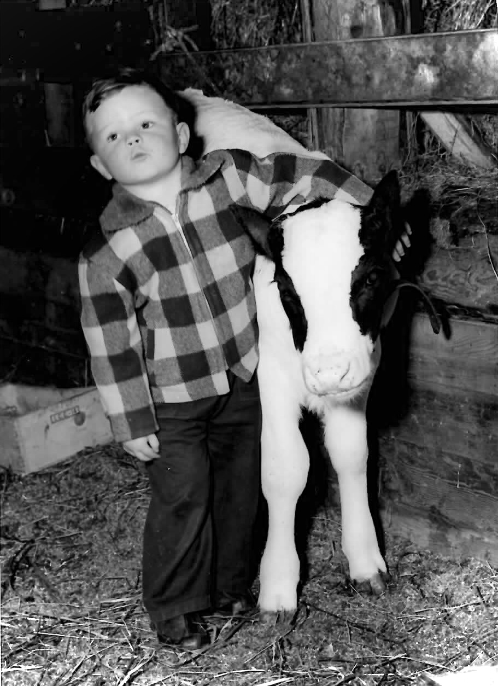

Little Michael, younger son of the City Bred Farmer Clarence Dirks now joins his dad, brother Marty and grandfather George as the owner of livestock. His young heifer was christened Viola but Michael prefers to call her Biola.